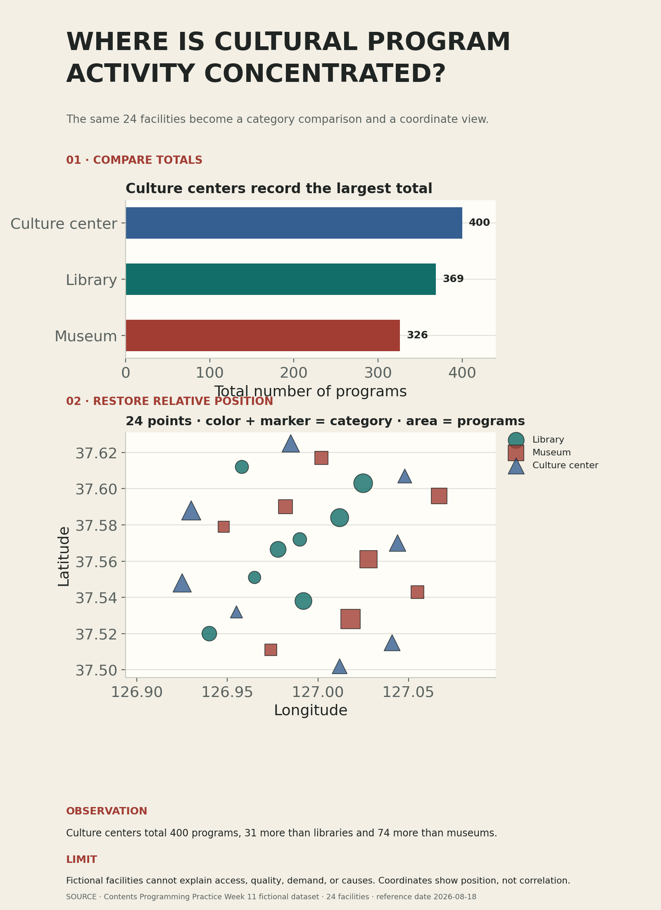

데이터에서 확인한 사실을 두 그래프와 세 문장으로 증명하기
오늘의 실습 목표
- 정제 CSV의 24행과 세 범주가 그대로 유지되었는지 확인할 수 있습니다.
- 범주별 프로그램 수 합계를 막대 3개로 정확하게 비교할 수 있습니다.
- 시설 24곳을 경도와 위도에 따라 점 24개로 배치할 수 있습니다.
- 범주를 색상과 표식 모양으로 중복 표현하고, 프로그램 수를 점의 크기로 나타낼 수 있습니다.
- 질문형 제목, 관찰 문장, 해석의 한계, 데이터 출처와 기준일을 한 장의 읽기 순서로 구성할 수 있습니다.
- 새 런타임의 모두 실행에서 자동 검사 PASS를 받고 노트북과 포스터를 제출할 수 있습니다.
자동 검사 PASS + 두 파일 제출 = 즉시 귀가
0-5분의 공통 안내가 끝나면 각자 자신의 속도로 진행합니다. 마지막 셀의 완료 문구를 확인하고, 실행 결과가 남은 노트북과 열리는 포스터 PNG를 제출한 학생은 수업 종료 시각을 기다리지 않고 귀가할 수 있습니다.
속도는 평가 기준이 아닙니다. 작업 속도와 남은 수업 시간은 평가에 반영하지 않습니다. 빠른 제출보다 데이터 보존, 정확한 그래프, 근거가 있는 관찰과 한계를 모두 증명하는 것이 중요합니다.
- 01준비사본 저장과 파일명
- 02기준 실행전체 구조 확인
- 03편집정보·제목·색상
- 04검증24행과 합계
- 05표현막대 3개·점 24개
- 06설명관찰과 한계
- 07저장1600 × 2200 PNG
- 08재실행자동 검사 PASS
- 09제출두 파일 확인
EXIT GATE
완료 문구 + 실행 결과가 있는 노트북 + 열리는 포스터
자동 검사는 필수 구조와 데이터 정확성을 확인합니다. 교수는 제출함에서 두 파일의 이름, 실행 결과와 포스터의 실제 가독성을 확인합니다.
먼저 확인할 자료와 최종 결과물
{kind=link}
노트북 안에는 같은 정제 CSV가 포함되어 있으므로 Colab에서 별도로 업로드하지 않아도 됩니다. CSV는 표의 구조를 직접 확인하려는 학생을 위한 참고 파일입니다. 완성 예시는 복제할 정답이 아니라 제목 → 비교 그래프 → 공간 그래프 → 관찰 → 한계 → 출처의 읽기 순서를 확인하는 자료입니다.

예시의 숫자는 검증 기준이기도 합니다
정제 데이터는 24행이며 도서관 8개, 박물관 8개, 문화센터 8개로 구성됩니다. 프로그램 수 합계는 박물관 326, 도서관 369, 문화센터 400입니다. 결과가 다르면 디자인을 고치기 전에 데이터와 집계 과정을 먼저 확인합니다.
귀가 조건: 제출 전에 열두 가지 확인
- 01
제출 정보학번과 이름이 실제 값이며 파일명에 사용할 수 있습니다.
- 02
질문형 제목현재 열로 답할 수 있고 물음표로 끝나는 자신의 질문입니다.
- 03
색상 규칙세 범주에 서로 다른 HEX 색상을 지정했습니다.
- 04
원본 보존노트북이 제공한 CSV 내용과 출처 메타데이터를 바꾸지 않았습니다.
- 05
데이터 구조24행, 범주 3개, 각 범주 8개가 확인됩니다.
- 06
집계 정확성범주별 합계가 326, 369, 400과 일치합니다.
- 07
비교 그래프0에서 시작하는 가로 막대 3개가 보입니다.
- 08
공간 그래프경도·위도 위치에 점 24개가 보입니다.
- 09
접근 가능한 구분범주를 색상과 표식 모양으로 함께 구분합니다.
- 10
해석숫자가 포함된 관찰 문장과 자료의 해석의 한계를 작성했습니다.
- 11
출력 규격포스터가 1600 × 2200 PNG로 저장됩니다.
- 12
재현새 런타임에서 모두 실행한 뒤 완료 문구가 보입니다.
자동 검사가 확인하는 범위
자동 검사는 미적 취향을 채점하지 않는다는 점을 기억합니다. 자동 검사는 데이터 행 수, 합계, 그래프 요소 수, 색상 형식, 문장과 파일 규격을 확인합니다. 교수는 정보 위계와 글자 가독성을 별도로 확인합니다. 검사를 속이는 것보다 화면에서 실제로 읽히는 포스터를 만드는 것이 목표입니다.
50분 진행 기준
- 0-5분미션 계약
귀가 조건과 두 제출 파일을 확인합니다.
- 5-12분준비·기준 실행
사본을 저장하고 전체 셀을 한 번 실행합니다.
- 12-22분정보·색상 편집
학번, 이름, 제목과 세 HEX 색상을 바꿉니다.
- 22-32분데이터·그래프 확인
24행, 합계, 막대 3개와 점 24개를 확인합니다.
- 32-41분관찰·한계 작성
화면의 근거와 단정할 수 없는 내용을 씁니다.
- 41-46분저장·육안 점검
PNG를 열어 잘림과 가독성을 확인합니다.
- 46-50분재실행·제출
새 런타임 PASS 후 두 파일을 제출합니다.
위 시간은 순서를 놓치지 않기 위한 기준입니다. 특정 구간이 빨리 끝나면 다음 단계로 이동합니다. 막힌 경우에는 아래의 접이식 문제 해결 항목을 먼저 확인하고, 그래도 해결되지 않을 때 교수에게 현재 STEP 번호와 오류 문장을 보여 줍니다.
준비 · 노트북 사본 저장과 파일명 변경
- 실습 노트북을 내려받아 Google Colab에서 엽니다.
- 파일 → Drive에 사본 저장을 선택합니다.
- 사본의 이름을
week11_학번_이름.ipynb형식으로 바꿉니다. - 상단에 자신의 Google 계정과 저장 완료 표시가 보이는지 확인합니다.
- 오늘 수정할 곳이 STEP 1과 STEP 5뿐인지 확인합니다.
노트북 제목에 자신의 학번과 이름이 있고, 원본 파일이 아니라 Drive 사본을 편집하고 있습니다.
Colab에서 노트북이 열리지 않을 때
Google Colab을 먼저 연 뒤 파일 → 노트북 업로드에서 내려받은 .ipynb를 선택합니다. 브라우저가 파일을 글자로 보여 주는 경우에는 새 탭에서 직접 열지 말고 Colab의 업로드 메뉴를 사용합니다.
사본 저장과 파일명 변경의 차이가 무엇인가?
사본 저장은 편집 가능한 자신의 파일을 만드는 일이고, 파일명 변경은 제출자를 식별할 이름을 붙이는 일입니다. 두 단계가 모두 필요합니다. 파일명에는 슬래시, 역슬래시, 물음표를 넣지 않습니다.
기준 실행 · STEP 0부터 STEP 7까지 한 번 실행
수정하기 전에 런타임 → 모두 실행을 선택합니다. 첫 실행에서는 필요한 라이브러리와 한글 글꼴을 준비하고, 노트북 안의 CSV를 파일로 만든 뒤, 기본 포스터와 자동 검사 결과를 보여 줍니다.
데이터24 rows · 3 categories · 8 / 8 / 8
합계박물관 326 · 도서관 369 · 문화센터 400
기본 검사EDIT 표시 때문에 일부 조건은 의도적으로 FAIL
처음부터 PASS가 되는 것이 정상이 아닙니다. 학번·이름, 제목, 색상, 관찰과 한계에 기본 문장이 들어 있으므로 편집 조건은 실패해야 합니다. 다만 24행과 세 합계, 막대 3개와 점 24개가 출력되면 환경과 데이터는 정상입니다.
설치 셀의 실행이 오래 걸릴 때
STEP 0은 pandas, Matplotlib, Seaborn 또는 한글 글꼴이 없을 때만 설치합니다. 완료 표시가 나타날 때까지 기다리고 다음 셀을 따로 실행하지 않습니다. 설치 후 세션을 다시 시작하라는 안내가 나타나면 다시 시작한 뒤 모두 실행합니다.
한글이 네모로 보일 때
글꼴 설치가 끝난 뒤 이전에 그린 그림은 자동으로 바뀌지 않습니다. 런타임 → 세션 다시 시작 후 모두 실행을 선택합니다. 그래도 문제가 있으면 STEP 0 출력의 선택된 글꼴 이름을 교수에게 보여 줍니다.
STEP 1 · 제출 정보와 질문형 제목 작성
STEP 1에서 student_id, student_name, poster_title을 수정합니다. 따옴표는 문자열의 경계이므로 지우지 않고 안쪽 내용만 바꿉니다.
student_id = "20261234"
student_name = "김포스터"
poster_title = "프로그램 수 합계가 가장 큰 시설 범주는 무엇인가?"질문형 제목은 포스터를 읽는 방향을 결정합니다. 현재 데이터에는 시설 이름, 범주, 프로그램 수, 위도와 경도가 있습니다. 따라서 “가장 좋은 시설은 어디인가?”처럼 좋음의 기준이 없는 질문보다 “프로그램 수 합계가 가장 큰 시설 범주는 무엇인가?”처럼 실제 열과 계산으로 답할 수 있는 질문이 적절합니다. 제목은 15자 이상 50자 이하로 쓰고 반각 물음표 ? 또는 전각 물음표 ？로 끝냅니다.
| 제목 | 판정 | 이유 |
|---|---|---|
| 공공문화시설 데이터 포스터 | 수정 필요 | 주제는 있지만 무엇을 확인할지 알 수 없습니다. |
| 가장 좋은 문화시설은 어디인가? | 수정 필요 | 좋음을 판단할 이용자 만족도·접근성 자료가 없습니다. |
| 프로그램 수 합계가 가장 큰 시설 범주는 무엇인가? | 사용 가능 | category와 program_count로 답할 수 있습니다. |
| 프로그램 수가 큰 시설은 좌표상 어디에 나타나는가? | 사용 가능 | 점의 위치와 크기로 살펴볼 수 있습니다. |
학번과 이름 검사가 실패할 때
"학번"과 "이름"이라는 기본값을 자신의 정보로 바꿉니다. 빈칸만 추가하거나 기본 단어를 포함한 채 숫자를 덧붙이면 통과하지 않습니다. 수정 뒤 STEP 1을 다시 실행합니다.
제목 검사에서 물음표 오류가 날 때
제목 끝에 ? 또는 ？를 넣고, EDIT: 표시를 삭제합니다. 제목은 단순히 길기만 한 문장이 아니라 범주, 프로그램 수, 위치처럼 현재 데이터로 확인할 대상을 포함해야 합니다.
STEP 1 계속 · 세 범주의 HEX 색상 정하기
같은 STEP 1에서 category_palette의 세 값을 수정합니다. HEX 색상은 # 뒤에 0-9 또는 a-f로 이루어진 여섯 글자를 적는 방식입니다. 세 값은 서로 달라야 하며 범주 이름과 중괄호, 쉼표는 그대로 둡니다.
category_palette = {
"도서관": "#177f78",
"박물관": "#b94b40",
"문화센터": "#365f91",
}색상만으로 범주를 구분하면 색각 특성이나 흑백 출력에서 정보가 사라질 수 있습니다. 노트북은 같은 category를 색상과 표식 모양에 함께 연결합니다. 색상이 비슷하게 보이더라도 원·사각형·마름모의 차이로 범주를 다시 확인할 수 있습니다.
세 값이 모두 #123abc와 같은 형식이며, 서로 다른 HEX 색상입니다. 산점도 범례에서 세 범주가 색상과 표식 모양으로 구분됩니다.
HEX 색상 형식이 유효하지 않다고 나올 때
#을 포함해 정확히 일곱 글자인지 확인합니다. 알파벳은 a부터 f까지만 사용할 수 있습니다. 예를 들어 #177f78은 가능하지만 177f78, #17green, #1234는 사용할 수 없습니다.
세 색상이 다른데도 구분이 어려울 때
색 이름이 아니라 밝기와 명도의 차이를 봅니다. 아주 밝은 색 세 개 또는 어두운 색 세 개만 고르지 말고, 완성 PNG를 화면에서 축소했을 때도 범주가 나뉘는지 확인합니다. 표식 모양과 범례도 함께 남겨 둡니다.
STEP 2–3 · 24행과 범주별 합계 검증
STEP 2와 STEP 3은 데이터를 읽고 검증한 뒤 집계표를 만듭니다. 이 셀은 수정하지 않습니다. 각 출력은 다음 그래프가 올바른 데이터를 사용하고 있다는 증거입니다.
| 검사 | 기대 결과 | 그래프와의 연결 |
|---|---|---|
| 전체 행 | 24행 | 산점도의 점 24개와 일대일로 연결됩니다. |
| 범주 | 도서관 8개 · 박물관 8개 · 문화센터 8개 | 색상·표식과 범례의 세 항목이 됩니다. |
| 범주별 합계 | 박물관 326 · 도서관 369 · 문화센터 400 | 가로 막대 3개의 길이가 됩니다. |
| 좌표 | 결측값 없는 위도·경도 24쌍 | 점 24개의 가로·세로 위치가 됩니다. |
이번 CSV는 10주차에 정제한 24행 구조를 이어받습니다. 10주차에는 한 행을 지도 마커 하나로 바꾸었다면, 이번에는 같은 한 행을 좌표 산점도의 점 하나로 바꿉니다. 동시에 groupby()로 24행을 세 범주의 합계로 요약하여 비교 그래프를 만듭니다.
범주별 합계가 예시와 다를 때
CSV 셀이나 데이터 검증 셀을 수정했는지 확인합니다. 이번 실습에서는 원본 데이터와 집계 코드를 바꾸지 않습니다. Drive 사본을 새로 만든 뒤 STEP 1의 개인 정보·제목·색상만 다시 옮기면 원본 상태를 복구할 수 있습니다.
왜 각 범주 8개인데 합계는 서로 다른가?
시설 수는 범주마다 8개로 같지만 각 시설의 program_count 값이 다르기 때문입니다. 시설 수를 세는 count()와 프로그램 수를 더하는 sum()은 서로 다른 질문에 답합니다.
STEP 4 · 막대 3개와 점 24개 읽기
STEP 4는 Figure 한 장과 Axes 두 개를 만듭니다. 위쪽 가로 막대그래프는 세 범주의 프로그램 수 합계를 비교하고, 아래쪽 좌표 산점도는 시설 24곳의 상대적 위치와 프로그램 수를 보여 줍니다.
COMPARISON
가로 막대그래프
한 막대 = 한 범주입니다. 막대 길이는 프로그램 수 합계이며 축은 0에서 시작합니다. 세 범주의 순위와 차이를 읽는 데 사용합니다.
sns.barplot(
data=category_summary,
x="program_count",
y="category",
errorbar=None,
)LOCATION
좌표 산점도
한 점 = 한 시설입니다. 경도는 가로 위치, 위도는 세로 위치, 범주는 색상·표식, 프로그램 수는 점 크기에 연결됩니다.
sns.scatterplot(
data=facility_df,
x="longitude",
y="latitude",
hue="category",
style="category",
size="program_count",
)좌표 산점도를 관계 산점도로 해석하지 않기
점이 오른쪽 위에 있다는 사실은 해당 시설이 동쪽과 북쪽에 있다는 뜻입니다. 경도와 위도의 상관관계나 한 변수가 다른 변수의 원인이라는 뜻이 아닙니다. 점의 크기도 원의 면적을 정확한 숫자로 읽는 도구가 아니라 큰 값과 작은 값의 대략적인 차이를 살피는 보조 표현입니다.
위쪽에 0에서 시작하는 막대 3개, 아래쪽에 점 24개가 있으며 산점도 범례에 범주와 프로그램 수가 모두 설명되어 있습니다.
막대가 세 개보다 많거나 적을 때
category_summary 출력이 세 행인지 확인합니다. 범주 이름의 띄어쓰기나 원본 CSV를 수정하면 같은 범주가 둘로 나뉠 수 있습니다. 데이터 셀을 고치지 말고 원본 노트북 사본으로 돌아갑니다.
점이 겹쳐서 24개로 보이지 않을 때
가까운 좌표의 점은 일부 겹쳐 보일 수 있습니다. 이것은 곧 데이터가 빠졌다는 뜻이 아닙니다. STEP 2의 행 수 출력과 마지막 자동 검사의 좌표 점 수: 24를 함께 확인합니다. 임의로 좌표를 옮기지 않습니다.
범례가 그래프를 가릴 때
노트북은 범례 위치와 여백을 미리 설정합니다. Figure 크기나 Axes 배치를 수정하면 범례가 겹칠 수 있으므로 필수 실습에서는 해당 코드를 유지합니다. 저장 PNG에서도 가림이 계속되면 새 사본에서 STEP 1과 STEP 5만 다시 편집합니다.
STEP 5 · 관찰 문장과 해석의 한계 작성
STEP 5에서 main_observation과 limitation_statement를 수정합니다. 관찰은 그래프에서 직접 확인한 사실이고, 한계는 현재 자료만으로 답할 수 없는 내용을 밝히는 문장입니다. 두 문장 모두 EDIT:을 삭제하고 30자 이상 90자 이하로 작성합니다.
| 문장 | 판정 | 이유 |
|---|---|---|
| 문화센터가 가장 좋다. | 사용 불가 | 좋음을 판단하는 기준과 근거가 없습니다. |
| 문화센터의 프로그램 수 합계는 400으로 세 범주 중 가장 크다. | 관찰 | 막대그래프의 수치와 순위를 직접 확인했습니다. |
| 동쪽의 큰 시설은 시민에게 더 유익하다. | 사용 불가 | 위치는 보이지만 이용 효과 자료가 없습니다. |
| 이 자료에는 이용자 수와 인구가 없어 서비스의 충분함은 판단할 수 없다. | 한계 | 현재 자료에 없는 변수를 구체적으로 밝혔습니다. |
main_observation = (
"문화센터의 프로그램 수 합계는 400으로 세 범주 중 가장 크며, "
"큰 점은 여러 좌표에 나뉘어 나타난다."
)
limitation_statement = (
"이 자료에는 이용자 수, 인구와 이동 시간이 없어 프로그램 수만으로 "
"문화 서비스의 충분함이나 접근성을 판단할 수 없다."
)관찰 문장에는 박물관 326, 도서관 369, 문화센터 400 가운데 실제 합계 하나 이상을 포함합니다. 숫자를 넣는 이유는 문장을 길게 만들기 위해서가 아니라 어떤 막대를 근거로 읽었는지 분명히 하기 위해서입니다.
관찰 문장이 너무 짧다고 나올 때
“문화센터가 가장 많다”에서 끝내지 말고 무엇이 얼마나 많은지 적습니다. 예를 들어 범주, 프로그램 수 합계 400, 세 범주 중 순위를 한 문장에 넣으면 근거가 분명해집니다.
관찰에 숫자가 없다고 나올 때
임의의 숫자를 쓰지 말고 집계표에서 326, 369, 400 가운데 자신이 설명할 값을 선택합니다. 숫자와 함께 “프로그램 수 합계”라는 단위를 적으면 무엇을 셌는지도 명확해집니다.
한계 문장에는 무엇을 써야 하는가?
현재 데이터에 없는 이용자 수, 인구, 운영 시간, 시설 면적, 이동 시간 가운데 하나를 고릅니다. 그 정보가 없어서 만족도, 접근성, 효율 또는 서비스의 충분함을 판단할 수 없다고 연결합니다.
STEP 6 · 1600 × 2200 PNG 저장과 육안 점검
STEP 6을 실행하면 노트북이 Figure 전체를 PNG로 저장합니다. figsize=(8, 11)과 dpi=200을 곱하면 가로 1600픽셀, 세로 2200픽셀이 됩니다. 출력 파일명은 자동으로 week11_학번_이름_data_poster.png 형식이 됩니다.
노트북week11_학번_이름.ipynb
포스터week11_학번_이름_data_poster.png · 1600 × 2200
- Colab 왼쪽 파일 목록에서 생성된 PNG를 찾습니다.
- 파일을 두 번 눌러 미리보기로 엽니다.
- 질문형 제목이 한눈에 보이고 잘리지 않는지 확인합니다.
- 막대의 범주 이름·값, 산점도의 축·범례를 읽을 수 있는지 확인합니다.
- 관찰 문장, 해석의 한계, 데이터 출처와 기준일이 아래쪽에서 잘리지 않는지 확인합니다.
- 파일 메뉴에서 PNG를 다운로드한 뒤 컴퓨터에서도 한 번 엽니다.
출처 표기에 포함된 정보
포스터 아래에는 수업용 가상 공공문화시설 데이터라는 데이터 출처, 이용 조건, 기준일, 한 행이 무엇을 뜻하는지 설명하는 관찰 단위가 표시됩니다. 제공된 메타데이터는 삭제하거나 실제 공공기관의 실측 자료처럼 바꾸지 않습니다.
PNG 파일이 만들어지지 않을 때
STEP 6 셀의 왼쪽에 완료 표시가 있는지 확인합니다. 앞 단계에서 오류가 났다면 저장 코드까지 도달하지 못합니다. 가장 먼저 나타난 빨간 오류의 STEP으로 돌아가 수정한 뒤 STEP 6을 다시 실행합니다.
제목이나 문장이 잘릴 때
포스터 크기 코드를 바꾸기보다 제목과 문장을 간결하게 다듬습니다. 한 문장에 여러 주장을 넣지 말고, 관찰은 한 가지 수치 패턴에 집중합니다. 그래도 잘리면 수정한 셀부터 저장 셀까지 다시 실행합니다.
수정한 문장이 PNG에 반영되지 않을 때
STEP 5를 수정한 뒤 문장 셀과 포스터 생성·저장 셀을 다시 실행해야 합니다. 가장 안전한 방법은 모든 수정이 끝난 뒤 새 런타임에서 모두 실행하여 PNG를 새로 만드는 것입니다.
STEP 7 · 새 런타임 모두 실행과 FINAL CHECK
- STEP 1과 STEP 5에
EDIT:이 남아 있지 않은지 확인합니다. - 런타임 → 세션 다시 시작을 선택해 새 런타임을 만듭니다.
- 런타임 → 모두 실행을 한 번만 선택합니다.
- 여덟 코드 셀이 위에서 아래로 끝날 때까지 기다립니다.
- 마지막 FINAL CHECK의 확인 항목과 완료 문구를 읽습니다.
✅ 새 런타임에서 STEP 0부터 여덟 셀 순서대로 실행
✅ 실제 학번·이름과 안전한 파일명
✅ 자신의 질문형 제목과 서로 다른 HEX 색상
✅ 제공 CSV와 출처 메타데이터 보존
✅ 24행·세 범주·각 범주 8개
✅ 박물관 326 · 도서관 369 · 문화센터 400
✅ 0에서 시작하는 막대 3개
✅ 색상·표식·크기로 구분한 점 24개
✅ 근거 수치가 있는 관찰 문장과 해석의 한계
✅ 글자 수와 포스터 경계 안의 제목·관찰·한계
✅ 1600 × 2200 PNG 저장
🎉 WEEK 11 DATA POSTER COMPLETE
FINAL CHECK 코드는 수정하지 않는다
마지막 셀에는 아직 배우지 않은 검사 코드가 포함되어 있습니다. 직접 고칠 필요가 없습니다. 빨간 오류 문장을 읽고 STEP 1 또는 STEP 5의 값만 수정합니다. 데이터나 검사 코드를 바꾸어 PASS를 만들면 결과의 정확성을 증명할 수 없습니다.
실행 순서 검사만 실패할 때
중간 셀을 따로 다시 실행하면 실행 번호가 연속되지 않을 수 있습니다. 수정 내용을 저장하고 세션을 다시 시작한 뒤 모두 실행을 한 번만 선택합니다. 완료 전에는 개별 셀의 재생 버튼을 누르지 않습니다.
그래프 요소 수 검사만 실패할 때
필수 그래프 코드나 데이터 셀을 수정했을 가능성이 큽니다. 막대는 세 범주의 요약이므로 3개, 산점도는 시설 24행과 대응하므로 24개여야 합니다. 새 노트북 사본에 STEP 1과 STEP 5의 내용만 옮겨 다시 실행합니다.
완료 문구는 보이지만 제출해도 되는지 불안할 때
완료 문구는 필수 구조가 통과했다는 뜻입니다. 마지막으로 PNG를 직접 열어 글자 잘림, 범례 가림, 지나치게 비슷한 색상이 없는지 확인합니다. 자동 검사와 육안 점검을 모두 통과하면 제출합니다.
제출 · 두 파일 확인 후 즉시 귀가
- 마지막 셀에 WEEK 11 DATA POSTER COMPLETE가 보이는지 확인합니다.
- 파일 → 다운로드 → .ipynb 다운로드로 실행 결과가 포함된 노트북을 받습니다.
- Colab 왼쪽 파일 목록에서 1600 × 2200 포스터 PNG를 다운로드합니다.
- 두 파일의 학번과 이름이 같고, 포스터가 실제로 열리는지 확인합니다.
- 제출함에 두 파일을 올리고 업로드 완료 상태를 교수에게 보여 줍니다.
- 제출 확인을 받으면 남은 시간과 관계없이 즉시 귀가합니다.
완료 판정
새 런타임 자동 검사 PASS, 실행 결과가 있는 노트북, 읽을 수 있는 데이터 포스터가 모두 확인되면 오늘의 필수 학습 목표를 달성했습니다. 작업 속도와 남은 수업 시간은 평가에 반영하지 않습니다.
노트북 다운로드 파일에 실행 결과가 없을 때
새 런타임 모두 실행이 끝난 뒤 Drive 저장 완료 표시를 기다립니다. 그 다음 Colab 메뉴에서 .ipynb를 내려받습니다. 실행 전의 원본 노트북이나 컴퓨터에 있던 이전 파일을 제출하지 않도록 수정 시간을 확인합니다.
제출함에 같은 이름의 파일이 이미 있을 때
컴퓨터에서 (1)이 붙은 최신 파일과 이전 파일을 혼동하지 않습니다. 두 파일을 열어 학번·이름, 질문과 완료 문구를 확인한 뒤 최신 결과만 제출합니다.
선택 확장 · 필수 제출을 마친 뒤에만
아래 활동은 귀가 조건이 아니며 추가 점수도 없습니다. 통과한 두 파일을 먼저 제출하고 보존한 뒤, 더 살펴보고 싶은 학생만 노트북 사본에서 진행합니다.
- 질문은 유지하고 세 색상의 명도 차이를 바꾸어 흑백 화면에서도 범주 순서가 읽히는지 비교합니다.
- 범주별 합계 옆에 시설 수 8개를 함께 적어 합계와 표본 수를 동시에 읽게 만듭니다.
- 좌표 산점도의 점 크기 범위를 좁혔을 때와 넓혔을 때 값 차이가 어떻게 과장되거나 약해지는지 관찰합니다.
- 같은 데이터로 시설당 평균 프로그램 수를 계산하되, 합계 질문과 평균 질문이 어떻게 다른지 별도 문장으로 설명합니다.
12주차 연결
11주차에는 수치와 좌표를 길이·위치·색상·크기로 번역했습니다. 12주차에는 텍스트를 정리하고 단어 빈도와 문장 패턴으로 바꾸는 과정을 다룹니다. 매체는 달라지지만 질문 설정 → 데이터 정리 → 표현 규칙 선택 → 관찰과 한계 작성이라는 작업 순서는 그대로 이어집니다.
도움말과 공식 자료
- Google Colab 공식 입문 노트북코드 셀 실행, Drive 사본 저장과 런타임 사용법
- Matplotlib 공식 문서: Axes와 subplotsFigure 안에서 실제 그래프를 그리는 Axes의 구조
- Matplotlib 공식 문서: savefigFigure를 PNG로 저장하는 함수와 DPI 설정
- Seaborn 공식 문서: barplot범주별 수치를 막대 길이로 표현하는 방법
- Seaborn 공식 문서: scatterplot색상, 크기와 표식 모양을 데이터 변수에 연결하는 방법